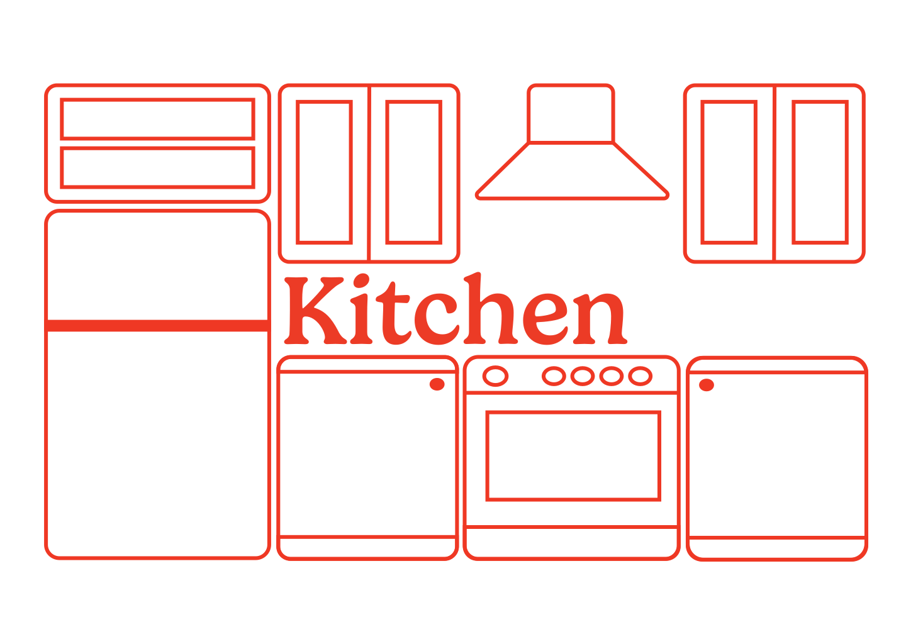

In the kitchen, there are a lot of reasons why Goldie(s) is/are not allowed to be in the place.
One main reason is that we Goldies are not humans. It can be affected to their physical health and to keep
the area clean and organized for the family.
Here are main two things Goldies need to follow:
1. Be careful about human's food
Goldies have really a good noise senser that we recognize what is today's human's food.
Unfortunately, we sometimes cannot eat their food because it may cause danger to us, so be careful!
Smelling good is not sign.
2. Do not go and find food in gargage boxes!
Humans waste tons of food. Cook, eat, make leftovers, and throw away in to the gargebe boxes.
We Goldies are always hungry. We need to eat, but do not go to the gargage boxes area.
There are some other things that we and even humans cannot eat, which is plastics, paper, etc.
If you are really really hungry and want to crave something, show up to your family and doing "I wanna eat something"
face or "Please give me some treats" face. They will definitely notice that.